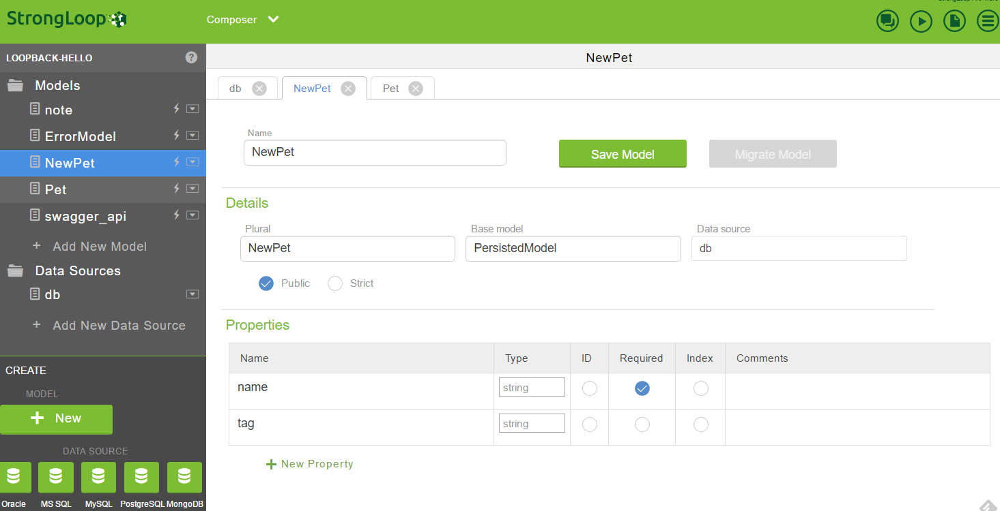
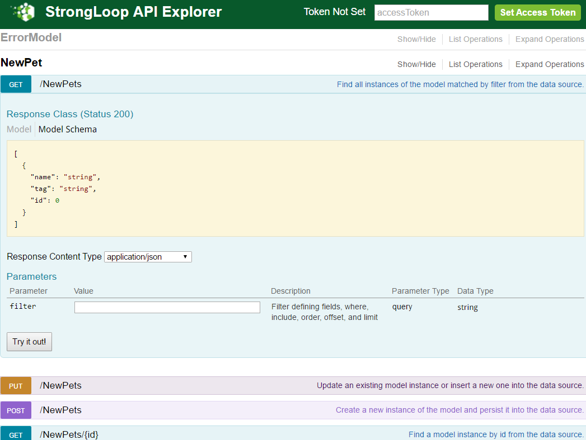

Loopback Framework
尽管我不怎么欣赏它的内部实现，但是不得不说这是Open API开发框架的又一次创新，使得开发API的过程更为简单和易用。
LoopBack 是一个基于Express的开源 Node.js API框架，用于快速构建自己的OpenAPI平台，提供API接口给mobile, web和其他设备。它能够同时连接多种不同的数据源，非常简单的暴露model为标准的RESTful API，用nodejs 开发API，提供JS, iOS 和 Android SDKs.
StrongLoop在2015年被IBM收购了.
Features
- 快速创建动态 end-to-end REST APIs.
- 连接设备/浏览器到数据和服务。
- 使用 Android, iOS, and AngularJS SDKs 轻松创建客户端应用.
- 提供 push, 文件管理, 第三方登录, 以及 geolocation 的附加组件.
- 使用
StrongLoop ArcIDE 可视化的编辑，部署和监视 LoopBack API服务. - StrongLoop API网关充当API消费者与API提供者之间的中介，进行外部化的安全管理API。
- 可以部署运行在内部或者云端
Install
安装前提：use the latest LTS (long-term support) release of Node.js(v4.x).
npm install -g strongloop
创建 loopback 应用
由 loopback slc脚手架工具，我们可以轻松的完成许多工作。包括创建应用，model，relation，acl等等。
$ slc loopback
[?] What's the name of your application? hello-world
create hello-world/
info change the working directory to hello-world
I'm all done. Running npm install for you to install
the required dependencies.
$ slc loopback:model
[?] Enter the model name: person
[?] Select the data-source to attach person to: db (memory)
[?] Select model`s base class (PersistedModel)
[?] Expose person via the REST API? Yes
[?] Custom plural form (used to build REST URL): people
[?] Common model or server only? common
Let's add some person properties now.
参阅官方的入门指南： Getting Started.
在本地运行 StrongLoop Arc IDE：
PORT=4000 HOST=0.0.0.0 slc arc
在IDE上只需要简单的设置数据源和model，就可以将指定的数据作为Restful API提供出去了。
注意IDE要求在 Strongloop 上注册方可使用。

skip the online login:
%HOME%/AppData/Roaming/npm/node_modules/strongloop/node_modules/strong-arc/clinet/www/scripts/modules/arc-user/arc-user.service.js:
svc.getCurrentUserId = function () {
//return $cookieStore.get('currentUserId');
return 12;
};
当你在IDE上设置添加并暴露出数据 model 后，就可以在IDE上直接运行。
你可以在这个地址: http://localhost:3000/explorer/ 上查看产生的API的联机互动文档：

另外在IDE上可以直接启动，停止服务。
事实上，就MVC模式而言，Loopback的应用
一般不用关心Controller，所有的操作（远程方法）都直接在Model上暴露和控制，
进一步简化了开发。因为是 API，所以View也不用关心，只需要在配置中定义支持
的输出格式(json, xml)。
Ok, 接下来以开发一个简单的博客API系统为例，进行说明。本例子修改自TopBlogger-Loopback，特此说明。
首先该博客系统有两个 model: Blog 和 Comment。我们使用loopback内置的用户体系
进行登陆认证，当然你可以扩展这个用户体系。这些 Model 的关系如下：
- 一篇博文(Blog)属于一个用户(User)
- 一篇博文可以有许多评论(Comment)
- 一篇评论(Comment)属于一个用户(User)
就认证授权来说，匿名用户只能看博文或者评论，不能发表。只有登录的用户才可以
发表博文或者评论，并且只可以编辑或者删除自己的博文或评论。
首先你要选择一个你希望使用的数据库，loopback支持如下的数据库：
- Memory connector：内置
- MongoDB connector：loopback-connector-mongodb
- MySQL connector：loopback-connector-mysql
- PostgreSQL connector：loopback-connector-postgresql
- SQL Server connector：loopback-connector-mssql
- DB2 connector：loopback-connector-db2
- Oracle connector：loopback-connector-oracle
- Redis connector:loopback-connector-redis
- Cloudant connector:loopback-connector-cloudant
注意的是有的数据库支持还是处于EA(Early Access)状态，并不稳定要留意文档。
另外还有一些非数据库的Connector:
- Email connector：内置
- Push connector: loopback-component-push
- Remote connector: loopback-connector-remote
- REST: loopback-connector-rest
- SOAP: loopback-connector-soap
- Storage connector: loopback-component-storage
还有社区维护的Connector,在这里.
选择好数据库后，需要安装相应的数据库Connector组件，在项目的根目录下:
npm install loopback-connector-mysql
使用data source generator建立
新的数据源。
slc loopback:datasource
$ slc loopback:datasource
? Enter the data-source name: myBlogger
? Select the connector for mysql: MySQL (supported by StrongLoop)
这会在 server/datasources.json中增加新的数据源，然后打开该文件，修改相关数据库的登录认证信息：
{
"db":{
"name":"db",
"connector":"memory"
},
"myBlogger": {
"name": "myBlogger",
"connector": "mysql",
"host": "your-mysql-server.foo.com",
"user": "db-username",
"password": "db-password",
"database": "myblogger"
}
}
然后使用model generator协助创建model
slc loopback:model
slc loopback:model
? Enter the model name: Blog
? Select the data-source to attach Blog to: myBlogger (mysql)
? Select model's base class: PersistedModel
? Expose myModel via the REST API? Yes
? Custom plural form (used to build REST URL):
Let's add some properties now.
...
接下来提示是创建它的属性。然后用同样的方式创建Comment Model.
Blog Model
- title (string)
- content (string)
- tags (array of strings)
- slug (string)
- numOfUpVotes (number)
- numOfDownVotes (number)
- numOfViews (number)
- upvotes (array of strings): userId 的数组
- downvotes (array of strings): userId 的数组
- isPublished (boolean)
- createdDate (date)
- updatedDate (date)
Comment Model
- content (string)
- numOfLikes (number)
- numOfDislikes (number)
- likes (array of strings): userId 的数组
- dislikes (array of strings): userId 的数组
- createdDate (date)
- updatedDate (date)
注意：
- 隐藏字段可以用
hidden参数，将不需要公开的字段名称列在这个数组中。 - Model 有这样一些定制设置:
-
plural- set to a custom string value to use, instead of the default standard plural form. -
strict- set to true to make the model save only instances that have the predefined set of properties. Any additional properties in a save or update operation are not persisted to the data source. False by default. -
idInjection- Whether to automatically add an id property to the model. True by default. -
http.path- customized HTTP path of REST endpoints. -
indexes- 可以设置字段的复合索引，不过注意的是采用官方文档进行设置的时候，Mysql的connector会报错，只能这样设置:"indexes": { "some_name_age_index": { "columns": "name, age", //不能使用keys，会报告: Key column 'undefined' doesn't exist in table "options": { "unique": true } } -
对于字段单个索引，可以直接写在字段中：
"name": { "type": "string", "index": true, "required": true },
-
接着就该是建立数据库之间的关系(relation), loopback 提供如下的关系:
- BelongsTo relations
- HasOne relations
- HasMany relations
- HasManyThrough relations
- HasAndBelongsToMany relations
- Polymorphic relations
- Embedded relations
- embedsOne and embedsMany
我们使用loopback提供的relation generator来建立关系：
slc loopback:relation
首先注意，关系的名称不能和属性(字段)名一样。
既然是用户写的博客，那么对博客而已，自然是BelongsTo关系:
$ slc loopback:relation
? Select the model to create the relationship from: Blog
? Relation type: belongs to
? Choose a model to create a relationship with: User
? Enter the property name for the relation: author
? Optionally enter a custom foreign key:
还有，博客上应支持不同读者的评论，自然博客上有许多(HasMany)评论：
$ slc loopback:relation
? Select the model to create the relationship from: Blog
? Relation type: has many
? Choose a model to create a relationship with: Comment
? Enter the property name for the relation: comments
? Optionally enter a custom foreign key:
? Require a through model? No
另外，评论本身也有作者的，所以还需要为Comment增加BelongsTo关系：
slc loopback:relation
? Select the model to create the relationship from: Comment
? Relation type: belongs to
? Choose a model to create a relationship with: User
? Enter the property name for the relation: author
? Optionally enter a custom foreign key:
注意：关系对应的方法名称参阅: Accessing related models
Ok, Model 自此建立完毕，建立的文件在项目的/server/models/目录或者/common/models目录下，
这个依赖您自己的配置。
那么，对于Scheme化的关系型数据库，如何自动在数据库中建立对应的表和字段呢？
很简单，对于如下的数据库，loopback提供了自动迁移（Auto-migrate）机制:
- Oracle
- PostgreSQL
- MySQL
- SQL Server
- MongoDB
注意：
- 在mongoDB中的autoMigrate()会建立缺失的索引，但是不会修改它们，如果索引的定义改变了。所以你
必须要么在mongoDB Shell中修改，或者删除他们再重建。 autoMigrate会首先Drop table，然后再建表。要保留数据，请用autoUpdate.
把脚本作为启动脚本放在项目的/server/boot/目录下(启动顺序按ASCII字母表顺序)：
/server/boot/auto-migrate.js:
module.exports = function(app) {
var log = require('debug')('boot:autoMigrate');
var path = require('path');
var models = require(path.resolve(__dirname, '../model-config.json'));
var datasources = require(path.resolve(__dirname, '../datasources.json'));
function migrateAll(aMethod){
Object.keys(models).forEach(function(model) {
if (typeof models[model].dataSource !== 'undefined') {
if (typeof datasources[models[model].dataSource] !== 'undefined') {
app.dataSources[models[model].dataSource][aMethod](model, function (err) {
if (err) throw err;
log('Model ' + model + ' '+ aMethod + 'd');
});
}
}
});
}
if (process.env.NODE_ENV !== 'production') {
migrateAll('automigrate');
}
else {
migrateAll('autoupdate');
}
};
对了，内置的 Model(User, AccessToken, ACL, RoleMapping, Role) 也应该存到数据库中:
server/model-config.json:
{
"User": {
"dataSource": "myBlogger",
"public": true
},
"AccessToken": {
"dataSource": "myBlogger",
"public": false
},
"ACL": {
"dataSource": "myBlogger",
"public": false
},
"RoleMapping": {
"dataSource": "myBlogger",
"public": false
},
"Role": {
"dataSource": "myBlogger",
"public": false
}
}
对内置Model的扩展方式可以参阅这里.
好了，现在，我们需要实现访问控制，loopback框架支持通过ACL(Access Control List)来控制权限。
slc loopback:acl
权限：
- 未登录用户只能看博客或者评论
- 登录用户可以:
- 创建博文
- 编辑自己的博文
- 发表自己的博文
- 顶一篇博文(Upvote)
- 踩一篇博文(Downvote)
- 创建博文的评论
- 编辑自己的评论
- 喜欢某个评论
- 不喜欢某个评论
首先，针对博客和评论，我们对任何人禁止掉所有的权限访问。
$ slc loopback:acl
? Select the model to apply the ACL entry to: Blog
? Select the ACL scope: All methods and properties
? Select the access type: All (match all types)
? Select the role: All users
? Select the permission to apply: Explicitly deny access
$ slc loopback:acl
? Select the model to apply the ACL entry to: Comment
? Select the ACL scope: All methods and properties
? Select the access type: All (match all types)
? Select the role: All users
? Select the permission to apply: Explicitly deny access
然后再允许所有人能阅读博客和评论。
? Select the model to apply the ACL entry to: Blog
? Select the ACL scope: All methods and properties
? Select the access type: Read
? Select the role: All users
? Select the permission to apply: Explicitly grant access
? Select the model to apply the ACL entry to: Comment
? Select the ACL scope: All methods and properties
? Select the access type: Read
? Select the role: All users
? Select the permission to apply: Explicitly grant access
允许认证用户能创建新的博文:
? Select the model to apply the ACL entry to: Blog
? Select the ACL scope: All methods and properties
? Select the access type: Write
? Select the role: Any authenticated user
? Select the permission to apply: Explicitly grant access
确保只有博文作者才编辑和发布博文：
? Select the model to apply the ACL entry to: Blog
? Select the ACL scope: All methods and properties
? Select the access type: Write
? Select the role: The user owning the object
? Select the permission to apply: Explicitly grant access
? Select the model to apply the ACL entry to: Blog
? Select the ACL scope: A single method
? Enter the method name: publish
? Select the role: The user owning the object
? Select the permission to apply: Explicitly grant access
认证用户可以顶或踩:
? Select the model to apply the ACL entry to: Blog
? Select the ACL scope: A single method
? Enter the method name: upvote
? Select the role: All users
? Select the permission to apply: Explicitly deny access
? Select the model to apply the ACL entry to: Blog
? Select the ACL scope: A single method
? Enter the method name: upvote
? Select the role: Any authenticated user
? Select the permission to apply: Explicitly grant access
? Select the model to apply the ACL entry to: Blog
? Select the ACL scope: A single method
? Enter the method name: downvote
? Select the role: All users
? Select the permission to apply: Explicitly deny access
? Select the model to apply the ACL entry to: Blog
? Select the ACL scope: A single method
? Enter the method name: downvote
? Select the role: Any authenticated user
? Select the permission to apply: Explicitly grant access
最后，如法炮制评论:
? Select the model to apply the ACL entry to: Comment
? Select the ACL scope: All methods and properties
? Select the access type: Write
? Select the role: Any authenticated user
? Select the permission to apply: Explicitly grant access
接下来就该添加新增的功能(remote methods)，例如：
- 发布一篇博文：
/blogs/:id/publish - 顶：
/blogs/:id/upvote - 踩：
/blogs/:id/downvote - 喜欢(评论)：
/comments/:id/like - 不喜欢(评论)：
/comments/:id/dislike
打开您models文件夹下的blog.js文件:
// Register a 'publish' remote method: /blogs/:id/publish
Blog.remoteMethod(
'publish',
{
http: {path: '/:id/publish', verb: 'put'},
accepts: {arg: 'id', type: 'string', required: true, http: { source: 'path' }},
returns: {root: true, type: 'object'},
description: 'Marks a blog as published.'
}
);
// the actual function called by the route to do the work
Blog.publish = function(id, cb) {
Blog.findById(id, function(err, record){
record.updateAttributes({isPublished: true, publishedDate: new Date()}, function(err, instance) {
if (err) cb(err);
if (!err) cb(null, instance);
})
})
};
Blog.remoteMethod(
'upvote',
{
http: {path: '/:id/upvote', verb: 'post'},
accepts: {arg: 'id', type: 'string', required: true, http: { source: 'path' }},
returns: {root: true, type: 'object'},
description: 'Marks a blog as upvoted.'
}
);
// Remote hook called before running function
Blog.beforeRemote('upvote', function(ctx, user, next) {
Blog.findById(ctx.req.params.id, function(err, record){
// do not let the user upvote their own record
if (record.authorId === ctx.req.accessToken.userId) {
var err = new Error("User cannot upvote their own blog post.");
err.status = 403;
next(err);
// do no let the user upvote a comment more than once
} else if (record.upvotes.indexOf(ctx.req.accessToken.userId) != -1) {
var err = new Error("User has already upvoted the blog.");
err.status = 403;
next(err);
} else {
next();
}
})
});
// the actual function called by the route to do the work
Blog.upvote = function(id, cb) {
// get the current context
var ctx = loopback.getCurrentContext();
Blog.findById(id, function(err, record){
// get the calling user who 'upvoted' it from the context
record.upvotes.push(ctx.active.accessToken.userId);
record.updateAttributes({numOfUpVotes: record.upvotes.length, upvotes: record.upvotes}, function(err, instance) {
if (err) cb(err);
if (!err) cb(null, instance);
})
})
};
注意：如果直接在代码里调用remoteMethod去添加远程方法，那么在Model.definition.settings.methods中不会出现。
另外，通过禁止Model内置的删除方法，还可以禁止任何删除评论,修改 models/comment.js:
Comment.disableRemoteMethod('deleteById', true);
我们还可以通过修改路由文件 /server/boot/routes.js 来扩展自己的定制路由，比如我们希望能
通过这样的路径访问到用户的博文: /:user/:slug：
app.get('/:user/:slug', function(req, res) {
Blog.findOne({ where: {authorId: req.params.user, slug:req.params.slug}, include: 'comments'}, function(err, record){
if (err) res.send(err);
if (!err && record) {
res.send(record);
} else {
res.send(404);
}
});
});
Storage component
通过使用Storage component获得支持文件上传下载功能。
该组件作为一种特殊的Datasource来使用，它支持如下的存储：
- 云存储
- Amazon
- Rackspace
- Openstack
- Azure
- 本地文件存储
存储组件将文件内容组织为容器containers 和文件 files。一个container包含一系列的文件，每一个文件必属于一个容器。
Containergroups files, similar to a directory or folder. A container defines the namespace for objects and is uniquely identified by its name, typically within a user account.- NOTE: A container cannot have child containers.
Filestores the data, such as a document or image. A file is always in one (and only one) container. Within a container, each file has a unique name. Files in different containers can have the same name.
安装
$ npm install loopback-component-storage
Datasource
接着我们需要创建一个新的Datasource：
可以直接在 /server/datasources.json 文件中创建：
"myfile": {
"name": "myfile",
"connector": "loopback-component-storage",
"provider": "amazon",
"key": "your amazon key",
"keyId": "your amazon key id"
}
也可以在程序中创建:
server/server.js:
var ds = loopback.createDataSource({
connector: require('loopback-component-storage'),
provider: 'filesystem',
root: path.resolve(__dirname, '../storage')
});
var container = ds.createModel('container', null, base: 'Model');
app.model(container);
然后就可以在API中访问:
| REST URI | Description | Container Model Method |
|---|---|---|
| GET /api/containers | List all containers. | getContainers(cb) |
| GET /api/containers/:container | Get information about specified container. | getContainer(container, cb) |
| POST /api/containers | Create a new container. | createContainer(options, cb) |
| DELETE /api/containers/:container | Delete specified container. | destroyContainer(container, cb) |
| GET /api/containers/:container/files | List all files within specified container. | getFiles(container, download, cb) |
| GET /api/containers/:container/files/:file | Get information for specified file within specified container. | getFile(container, file, cb) |
| DELETE /api/containers/:container/files/:file | Delete a file within a given container by name. | removeFile(container, file, cb) |
| POST /api/containers/:container/upload | Upload one or more files into the specified container. The request body must use multipart/form-data which the file input type for HTML uses. | upload(req, res, cb) |
| GET /api/containers/:container/download/:file | Download a file within specified container. | download(container, file, res, cb) |
| Get a stream for uploading. | uploadStream(container, file, options, cb) | |
| Get a stream for downloading. | downloadStream(container, file, options, cb) |
如果是用本地文件系统，那么每创建一个容器，对应于每创建一个子目录:
curl -X POST --header "Content-Type: application/json" --header "Accept: application/json" -d "{
\"name\": \"test\"
}" "http://localhost:3000/api/containers"
注意当前container只支持1级目录，不支持多级目录。
深入探索
slc loopback:swagger
即由 loopback:swagger 可以把 Open API 文档直接导入进 loopback 应用。
不过，它会针对API文档的basePath虚拟一个非持久化model: swagger_xxx，在Open API上的接口
从这个虚拟model上暴露出来。
slc loopback:swagger <your_api_doc_path>
? Enter the swagger spec url or file path: (wiki\user-api.yaml)
? Select models to be generated: (Press <space> to select)
>(*) swagger_users
( ) UserModel
Creating model definition for swagger_users...
Creating model definition for UserModel...
Model definition created/updated for swagger_users.
Model definition created/updated for UserModel.
Creating model config for swagger_users...
Creating model config for UserModel...
Model config created for swagger_users.
Model config created for UserModel.
Generating project\server\models\swagger-users.js
Models are successfully generated from swagger spec.
slc应该提供一个方便的model以及remote method文档描述和生成工具。
内建的 models
参阅：这里
the built-in models attach to the ‘db’ datasource automatically:
var dataSourceTypes = {
DB: 'db',
MAIL: 'mail'
};
registry.Email.autoAttach = dataSourceTypes.MAIL;
registry.getModel('PersistedModel').autoAttach = dataSourceTypes.DB;
registry.User.autoAttach = dataSourceTypes.DB;
registry.AccessToken.autoAttach = dataSourceTypes.DB;
registry.Role.autoAttach = dataSourceTypes.DB;
registry.RoleMapping.autoAttach = dataSourceTypes.DB;
registry.ACL.autoAttach = dataSourceTypes.DB;
registry.Scope.autoAttach = dataSourceTypes.DB;
registry.Application.autoAttach = dataSourceTypes.DB;
扩展内置Model，除了官方文中提到方法外，还可以在 /server/boot/文件中直接对原有Model增加字段。
User
Default User ACLs.
- DENY EVERYONE *
- ALLOW EVERYONE create
- ALLOW EVERYONE login
- ALLOW EVERYONE logout
- ALLOW EVERYONE confirm their identity
- ALLOW EVERYONE reset their own password
- ALLOW OWNER deleteById
- ALLOW OWNER findById
- ALLOW OWNER updateAttributes
默认字段:
- realm(string)
- username(string)
- password(string, required)
- email(string, required)
- emailVerified(boolean)
- verificationToken(string)
Register
curl -X POST -H "Content-Type:application/json" \
-d '{"email": "me@domain.com", "password": "secret"}' \
http://localhost:3000/api/users
自带的注册验证为电子邮件验证，另外如果需要在注册前验证是否用户名或者邮件地址已经被注册，可以使用 beforeRemote hook.
启用电子邮件验证(必须先设置Mail datasource):
//server/model-config.json
"user": {
"dataSource": "db",
"public": true,
"options": {
"emailVerificationRequired": true
}
}
/common/models/user.js:
var config = require('../../server/config.json');
var path = require('path');
module.exports = function(user) {
//send verification email after registration
user.afterRemote('create', function(context, userInstance, next) {
console.log('> user.afterRemote triggered');
var options = {
type: 'email',
to: userInstance.email,
from: 'noreply@loopback.com',
subject: 'Thanks for registering.',
template: path.resolve(__dirname, '../../server/views/verify.ejs'),
redirect: '/verified',
user: user
};
userInstance.verify(options, function(err, response, next) {
if (err) return next(err);
console.log('> verification email sent:', response);
context.res.render('response', {
title: 'Signed up successfully',
content: 'Please check your email and click on the verification link ' +
'before logging in.',
redirectTo: '/',
redirectToLinkText: 'Log in'
});
});
});
}
模板文件 verify.ejs:
This is the html version of your email.
<strong><%= text %></strong>
ACL(Access Control List)
访问控制概念
- Principal: An entity that can be identified or authenticated.
- Represents identities of a request to protected resources.
- eg:
- A user
- An application
- A role (please note a role is also a principal)
- Role: A group of principals with the same permissions.
- eg:
- Dynamic role:
- $everyone (for all users)
- $unauthenticated (unauthenticated users)
- $owner (the principal is owner of the model instance)
- Static role: admin (a defined role for administrators)
- Dynamic role:
- eg:
- RoleMapping: Assign principals to roles
- Statically assigns principals to roles.
- eg:
- Assign user with id 1 to role 1
- Assign role ‘admin’ to role 1
常规处理步骤
- 指定用户角色. 定义需要的用户角色。例如：匿名用户，认证用户和管理者。
- 定义每一个角色或者Model的访问权限D. 例如：匿名用户只可以读银行列表，但是不允许其它操作.
LoopBack 的models 有一套内置的方法，每一个方法被映射为READ或者WRITE访问权限. In essence, this step amounts to specifying whether access is allowed for each role and each Model + access type, as illustrated in the example below. - 实现认证: 添加代码区创建(注册)用户，登录用户（获取并使用认证token），并注销用户。
如何暴露隐藏 models, 方法 和 API
通过 REST API 暴露一个 model 非常简单，只需要设置 /server/model-config.json 文件的 public 属性为 true 即可:
"Role": {
"dataSource": "db",
"public": false
}
隐藏方法和REST API
如果你不想暴露特定的 create, retrieve, update, delete 操作, 那么你可以通过调用Model的 disableRemoteMethod() 方法来实现。
在你的model文件(common/models/目录下)中加入以下的代码，隐藏预定义的API方法:
var isStatic = true;
//hide the predefined remote methods
MyModel.disableRemoteMethod('deleteById', isStatic);
如果你想隐藏的方法是在prototype上的实例方法,那么你需要设置 isStatic 为 false:
var isStatic = false;
//hide the methods on the prototype
MyModel.disableRemoteMethod('updateAttributes', isStatic);
定义使用Role
LoopBack 支持静态或动态的角色。静态角色保存在数据库中并映射到用户。作为对比，动态角色并不
事先和用户绑定，它是在访问时才被确定。
Static roles
创建静态 Role 记录:
Role.create name: 'admin', (err, role)->
return cb(err) if err
# add a user to the role.
role.principals.create principalType: RoleMapping.USER, principalId: aUser.id, (err, principal)->
cb(err)
但是更普通的用法应该是：
Role.create name: 'project.del', (err, role)->
return cb(err) if err
# assign admin to the project.del role.
role.principals.create principalType: RoleMapping.ROLE, principalId: 'admin', (err, principal)->
cb(err)
这样会在权限角色上挂大量的用户自定义角色，太糟糕了，所以只能通过编写动态角色来做。
Dynamic roles
大多数时候，静态角色的灵活性并不够，因此 Loopback提供了在运行时刻确定权限的动态角色。
并且 LoopBack 提供下列内置的动态角色：
| Role 对象属性 | 字符串值 | 说明 |
|---|---|---|
| Role.OWNER | $owner | Owner of the object |
| Role.AUTHENTICATED | $authenticated | authenticated user |
| Role.UNAUTHENTICATED | $unauthenticated | Unauthenticated user |
| Role.EVERYONE | $everyone | Everyone |
如何定义动态角色? 只需要在启动(boot)脚本中使用 Role.registerResolver(name, fnRoleHandler) 配置自己的
定制角色处理器即可。该函数有两个参数:
- 该动态角色的名称
- 角色处理器异步函数，确定一个 principal 是否在该动态角色里。该函数传入的参数为
function(role, context, callback)
- role: 来自的role
- content: 当前期望访问的内容principal.
- callback: 返回结果回调函数。
function(error, result)- error: 如果有错误则把error对象传入该参数，否则应该是
null - result: (boolean) ，
true表示允许，false表示拒绝。
- error: 如果有错误则把error对象传入该参数，否则应该是
例如：
// /server/boot/script.js
module.exports = function(app) {
var Role = app.models.Role;
Role.registerResolver('teamMember', function(role, context, cb) {
function reject(err) {
if(err) {
return cb(err);
}
cb(null, false);
}
if (context.modelName !== 'project') {
// the target model is not project
return reject();
}
var userId = context.accessToken.userId;
if (!userId) {
return reject(); // do not allow anonymous users
}
// check if userId is in team table for the given project id
context.model.findById(context.modelId, function(err, project) {
if(err || !project) {
reject(err);
}
var Team = app.models.Team;
Team.count({
ownerId: project.ownerId,
memberId: userId
}, function(err, count) {
if (err) {
return reject(err);
}
cb(null, count > 0); // true = is a team member
});
});
});
};
接下来就可以在model中使用该动态角色teamMember:
// /common/models/model.json
{
"accessType": "READ",
"principalType": "ROLE",
"principalId": "teamMember",
"permission": "ALLOW",
"property": "findById"
}
终端打印
在开发过程中希望通过终端输出调试信息，则可以根据自己的模块以及组织引入：
var log = require('debug')('common:autoMigrate');
log("this is a debug info.");
使用时候:
$ DEBUG=<pattern>[,<pattern>...] node .
支持通配符:
$ DEBUG=common:* node .
具体的内置模块调试信息参阅: Setting debug strings